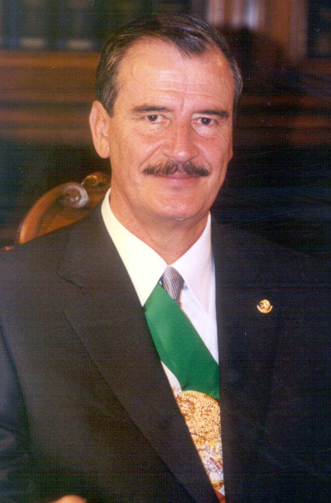
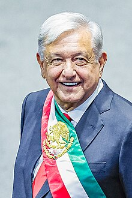

Cuadro Comparativo de Modelos Económicos Contemporáneos
| Criterios | Sustitución de Importaciones (1940-1952) | Desarrollo Estabilizador (1952-1970) | Desarrollo Compartido (1970-1982) | Neoliberalismo (1982-2000) | Globalización (2000-Actualidad) |
|---|---|---|---|---|---|
| Análisis general | Fue una etapa de industrialización acelerada, pero con limitaciones en competitividad internacional. | Logró un crecimiento económico sostenido y estabilidad macroeconómica, pero con un enfoque proteccionista. | Intentó redistribuir el ingreso, pero generó inflación y endeudamiento excesivo. | Promovió la apertura económica y la reducción del Estado, pero aumentó la desigualdad y la pobreza. | Ha integrado a México en la economía global, con avances tecnológicos, pero persisten desafíos en equidad y acceso a la tecnología. |
| Objetivo principal | Industrializar el país y reducir la dependencia de importaciones. | Mantener estabilidad macroeconómica con crecimiento sostenido. | Promover una mayor equidad en la distribución del ingreso. | Reducir la intervención del Estado en la economía y fomentar el libre mercado. | Integración de México a la economía global y expansión del comercio digital. |
| Políticas económicas |
|
|
|
|
|
| Resultados económicos | Crecimiento industrial acelerado, falta de competitividad internacional, dependencia de insumos importados. | Crecimiento del PIB 6.7% anual, baja inflación (4.9% promedio), tipo de cambio fijo. | Crisis de deuda, inflación del 98.8% en 1982, endeudamiento externo de 58,874 millones de dólares, crisis económica y devaluación. | Crecimiento desigual, aumento de la pobreza, concentración de riqueza, dependencia de inversiones extranjeras. | Expansión de la economía digital, mayor acceso a tecnología, pero desigualdad en sectores vulnerables. |
| Impacto social | Migración del campo a la ciudad, desigualdad en el acceso a bienes y servicios. | Expansión del consumo y acceso a bienes básicos, estabilidad social relativa. | Aumento de pobreza y desempleo, desigualdad social. | Aumento de la informalidad laboral, precarización del empleo, pérdida de derechos laborales. | Crecimiento del sector digital, pero exclusión de sectores sin acceso a tecnología. |
| Presidentes clave |
|
|
|
|
|





Fuentes bibliográficas y datos del creador
- Alba, L., Lins, E., & Mathews, R. (2015). La globalización desde abajo: La otra economía mundial. COLMEX-FCE.
- Chossudovsky, M. (2003). Globalización de la pobreza y nuevo orden mundial. Siglo XXI-UNAM.
- Reder, M. (2012). Globalización y filosofía. Herder.
- Salazar, F. (2004). Globalización y política neoliberal en México. Universidad Autónoma Metropolitana.
- Secretaría de Economía. (s.f.). Historia económica de México y su evolución. Gobierno de México. Recuperado de https://www.economia.gob.mx/datamexico/es/
- FMI. (2023). Impacto de la globalización en las economías emergentes. Fondo Monetario Internacional. Recuperado de https://www.imf.org/es/Publications
Matrícula: ES251112064
Correo institucional: jose.sanchez25LMT@nube.unadmexico.mx
Universidad: UNIVERSIDAD ABIERTA Y A DISTANCIA DE MÉXICO
Facultad: CIENCIAS EXACTAS, INGENIERÍA Y TECNOLOGÍA
Carrera: MATEMÁTICAS
Materia: CONTEXTO SOCIOECONÓMICO DE MÉXICO
Grupo: MT-MCSM-2501-B1-001